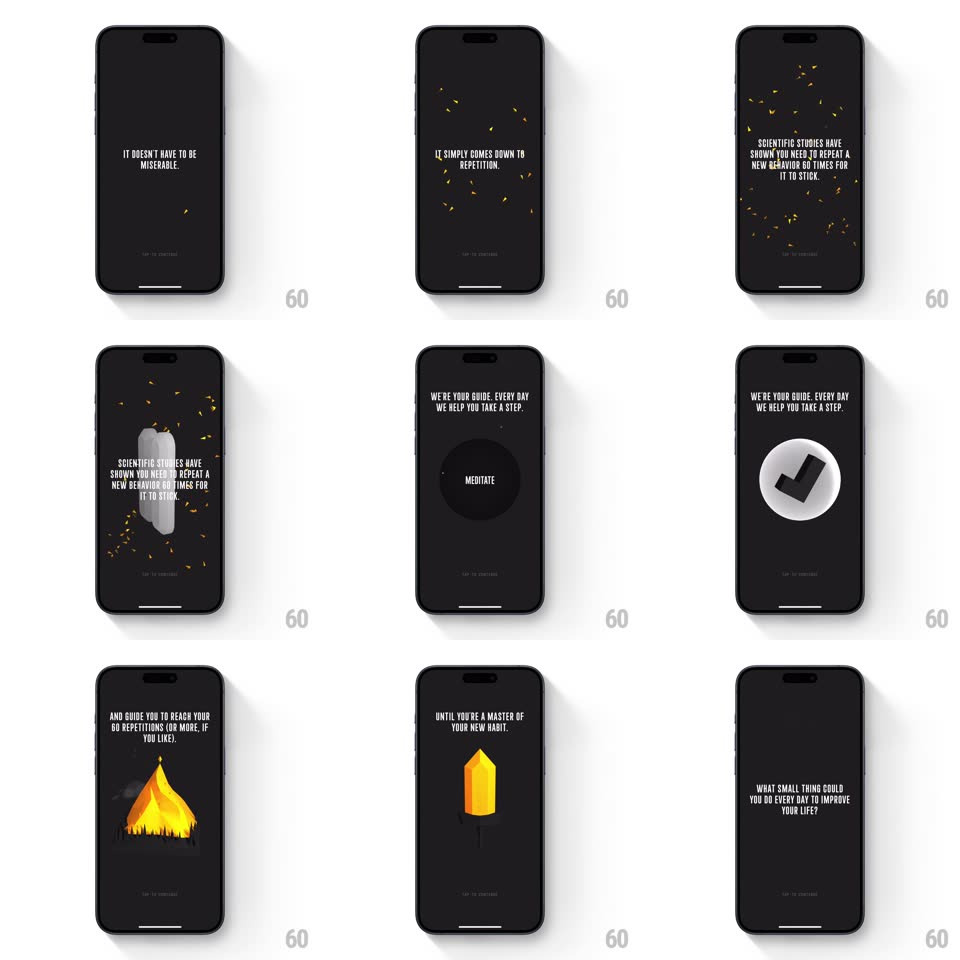

Media
Frame-by-frame

Rebuild this interaction 1:1: Not Boring Habits' onboarding - a story-driven sequence of bold all-caps statements that shove each other off screen, with confetti particles and a giant "66" centerpiece.

Rebuild this interaction 1:1: Not Boring Habits' onboarding - a story-driven sequence of bold all-caps statements that shove each other off screen, with confetti particles and a giant "66" centerpiece. ## Integration Integration: stack-agnostic spec - springs given as stiffness/damping, timed motions as duration + curve; map every value to your framework and animation library of choice. ## Scene Black background, centered bold condensed white caps text. The story beats: "WANT TO KNOW THE SECRET TO BUILDING BETTER HABITS...?" / "IT DOESN'T HAVE TO BE MISERABLE." / "IT SIMPLY COMES DOWN TO REPETITION." / a giant outlined "66" with study copy wrapped around it / "WE'RE YOUR GUIDE..." with a white check disc / "...REACH YOUR 66 REPETITIONS" / "UNTIL YOU'RE A MASTER OF YOUR NEW HABIT." / "WHAT SMALL THING COULD YOU DO EVERY DAY TO IMPROVE YOUR LIFE?" ## Motion spec Pattern: typographic story cards with 3D shove transitions. - Each statement holds ~1.8s, then the next shoves it away: the outgoing text rotates in 3D (rotateX -40deg) and falls/slides off while the incoming text swings in from the opposite side (rotateX 40deg to 0, 450ms, spring ~300/20) - like panels being swapped by hand. - Key words punctuate with a scale pop (scale 0.9 to 1.05 to 1, spring ~420/18) as they land. - On the "REPETITION" beat: yellow confetti particles burst from the text (20-30 pieces, gravity + drift, 1.2s) and a few linger falling into the next beat. - The "66" beat: the numeral scales in huge from 0.6 (spring ~280/16, overshoot), rendered as an outline stroke; copy lines stagger around it (translateY 10px, 200ms, 100ms apart). - The check-disc beat: a white circle scales in (spring ~380/20) and the black check draws itself (stroke-dash, 300ms). - A small "TAP TO CONTINUE" prompt pulses at the bottom (opacity 0.3 to 0.7, 1.2s); taps fast-forward to the next beat with the same shove. ## Calibration - Text is always centered, always caps, always high contrast - the type IS the UI. - One idea per screen; never stack two statements. ## Reduced motion Statements crossfade; no particles. ## Don't miss - The "66" is the hero beat - give it the biggest scale and the only numeral treatment. - Confetti is sparse and yellow only.